#Imports
import numpy as np
import matplotlib.pyplot as plt
import statsmodels.api as sm
from statsmodels.tsa.seasonal import seasonal_decompose, STL
from scipy.fft import fft
np.random.seed(0) # for reproducibilityIntroduction to time series analysis

Introduction
In this lecture we will cover the following topics:
- Definition of time series data.
- Introduction to time series analysis and application examples.
- The main components of a time series.
- Time series decomposition.
Basics
What is a time series?
- A time series is a sequence of data points organized in time order.
- Usually, the time signal is sampled at equally spaced points in time.
- These can be represented as the sequence of the sampled values.
- We refer to this setting as discrete time.

- Irregularly sampled time signals can still be represented as a time series.
- It is necessary to encode this additional information into an additional data structure.
- We refer to this setting as continuous time.

- This setting is less common. We focus on discrete time.
What data are represented as time series?
- Time series are found in a myriad of natural phenomena, industrial and engineering applications, business, human activities, and so on.


- Other examples include data from:
- Finance: stock prices, asset prices, macroeconomic factors.
- E-Commerce: page views, new users, searches.
- Business: transactions, revenue, inventory levels.
- Natural language: machine translation, chatbots.
Time series analysis
The main pruposes of time series analysis are: 1. To understand and characterize the underlying process that generates the observed data. 2. To forecast the evolution of the process, i.e., predict the next observed values.
- There are two main different perspectives to look at a time series.
- Each perspective leads to different time series analysis approaches
Statistics perspective
- A time series is a sequence of random variables that have some correlation or other distributional relationship between them.

- The sequence is a realization (observed values) of a stochastic process.
- Statistical time series approaches focus on finding the parameters of the stochastic process that most likely produced the observed time series.
Dynamical system perspective
- This perspective assumes that there is a system governed by unknown variables \(\{x_1, x_2, x_3, \dots ,x_𝑁\}\).
- Generally, we only observe one time series \(y\) generated by the system.
- What can \(y\) be?
- One of the system variables.
- A function \(f\) of system variables.
- The objective of the analysis is to reconstruct the dynamics of the entire system from \(y\).

Applications
Time series analysis is applied in many real world applications, including - Economic forecasting - Stock market analysis - Demand planning and forecasting - Anomaly detection - … And much more
Economic Forecasting
- Time series analysis is used in macroeconomic predictions.
- World Trade Organization does time series forecasting to predict levels of international trade [source].
- Federal Reserve uses time series forecasts of the economy to set interest rates [source].

Demand forecasting
- Time series analysis is used to predict demand at different levels of granularity.
- Amazon and other e commerce companies use time series modeling to predict demand at a product geography level [source].
- Helps meet customer needs (fast shipping) and reduce inventory waste

Anomaly detection
- Used to detect anomalous behaviors in the underlying system by looking at unusual patterns in the time series.
- Widely used in manufacturing to detect defects and target preventive maintenance [source].
- With new IoT devices, anomaly detection is being used in machinery heavy industries, such as petroleum and gas [source].

Time series components
- A time series is often assumed to be composed of three components:
- Trend: the long-term direction.
- Seasonality: the periodic behavior.
- Residuals: the irregular fluctuations.
Trend
- Trend captures the general direction of the time series.
- For example, increasing number of passengers over the years despite seasonal fluctuations.
- Trend can be increasing, decreasing, or constant.
- It can increase/decrease in different ways over time (linearly, exponentially, etc…).

- Let’s create a trend from scratch to understand how it looks like.
time = np.arange(144)
trend = time * 2.65 +100fig, ax = plt.subplots(1, 1, figsize=(10, 3))
ax.plot(time, trend, color='tab:red')
ax.set_xlabel("Months")
ax.set_ylabel("Passengers")
plt.grid()
plt.title("Trend vs Time");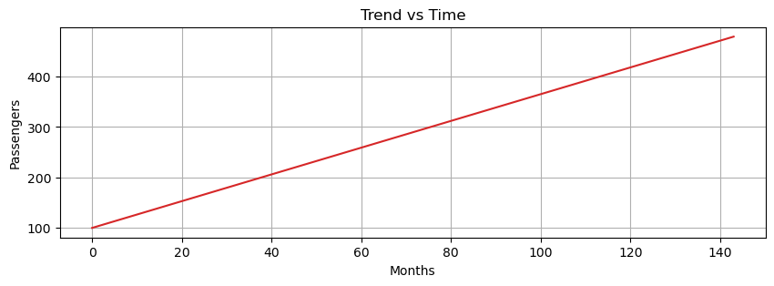
Seasonality
- Periodic fluctuations in time series data that occur at regular intervals due to seasonal factors.
- It is characterized by consistent and predictable patterns over a specific period (e.g., daily, monthly, quarterly, yearly).
It can be driven by many factors. - Naturally occurring events such as weather fluctuations caused by time of year. - Business or administrative procedures, such as start and end of a school year. - Social or cultural behavior, e.g., holidays or religious observances.
- Let’s generate the seasonal component.
seasonal = 20 + np.sin( time * 0.5) * 20fig, ax = plt.subplots(1, 1, figsize=(10, 3))
ax.plot(time, seasonal, color='tab:orange')
ax.set_xlabel("Months")
ax.set_ylabel("Passengers")
plt.grid()
plt.title("Seasonality vs Time");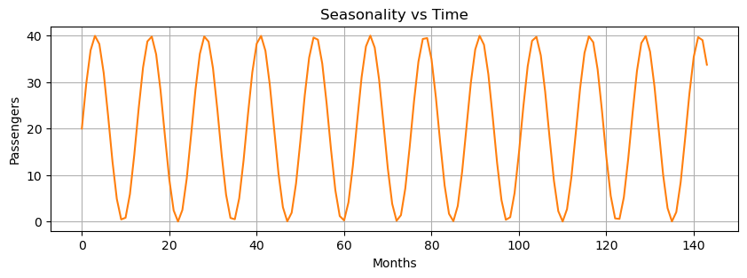
Residuals
- Residuals are the random fluctuations left over after trend and seasonality are removed from the original time series.
- One should not see a trend or seasonal pattern in the residuals.
- They represent short term, rather unpredictable fluctuations.
residuals = np.random.normal(loc=0.0, scale=3, size=len(time))fig, ax = plt.subplots(1, 1, figsize=(10, 3))
ax.plot(time, residuals, color='tab:green')
ax.set_xlabel("Months")
ax.set_ylabel("Passengers")
plt.grid()
plt.title("Residuals vs Time");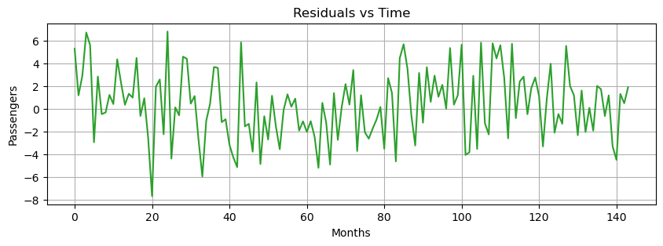
Decomposition Models
- Time series components can be decomposed with the following models:
- Additive decomposition
- Multiplicative decomposition
- Pseudoadditive decomposition
Additive model
- Additive models assume that the observed time series is the sum of its components:
\[X(t) = T(t) + S(t) + R(t)\]
- where
- \(X(t)\) is the time series
- \(T(t)\) is the trend
- \(S(t)\) is the seasonality
- \(R(t)\) is the residual
- \(X(t)\) is the time series
- Additive models are used when the magnitudes of the seasonal and residual values do not depend on the level of the trend.
additive = trend + seasonal + residualsfig, ax = plt.subplots(1, 1, figsize=(10, 3))
ax.plot(time, additive, 'tab:blue')
ax.set_xlabel("Months")
ax.set_ylabel("Passengers")
plt.title("Additive Time Series")
plt.grid();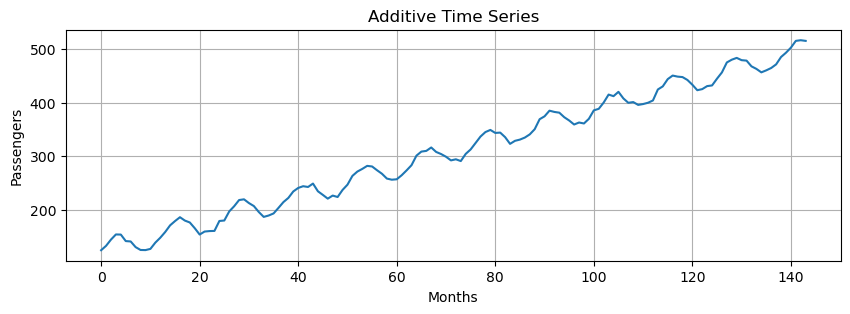
Multiplicative Model
- Assumes that the observed time series is the product of its components:
\[X(t) = T(t) \cdot S(t) \cdot R(t)\]
- It is possible to transform a multiplicative model to an additive one by applying a log transformation:
\[\log \left( T(t) \cdot S(t) \cdot R(t) \right) = \log(T(t)) + \log(S(t)) + \log(R(t))\]
- Multiplicative models are used when the magnitudes of seasonal and residual values depends on trend.
multiplicative = trend * seasonal # we do not include residuals to make the pattern more clearfig, ax = plt.subplots(1, 1, figsize=(10, 3))
ax.plot(time, multiplicative, 'tab:blue')
ax.set_xlabel("Months")
ax.set_ylabel("Passengers")
plt.title("Multiplicative Time Series")
plt.grid();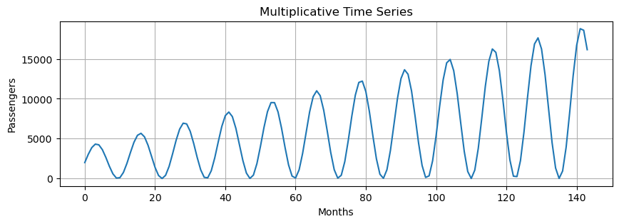
Pseudoadditive Model
- Pseudoadditive models combine elements of the additive and multiplicative models.
- Useful when:
- Time series values are close to or equal to zero. Multiplicative models struggle with zero values, but you still need to model multiplicative seasonality.
- Some features are multiplicative (e.g., seasonal effects) and other are additive (e.g., residuals).
- Complex seasonal patterns or data that do not completely align with additive or multiplicative model.
- For example, this model is particularly relevant for modeling series that:
- are extremely weather-dependent,
- have sharply pronounced seasonal fluctuations and trend-cycle movements.
- Formulation:
\[X(t) = T(t) + T(t)\cdot(S(t) - 1) + T(t)\cdot(R(t) - 1) = T(t)\cdot(S(t) + R(t) -1)\]
pseudoadditive = trend * (seasonal + residuals - 1)fig, ax = plt.subplots(1, 1, figsize=(10, 3))
ax.plot(time, pseudoadditive, 'tab:blue')
ax.set_xlabel("Months")
ax.set_ylabel("Passengers")
plt.title("Pseudoadditive Time Series")
plt.grid();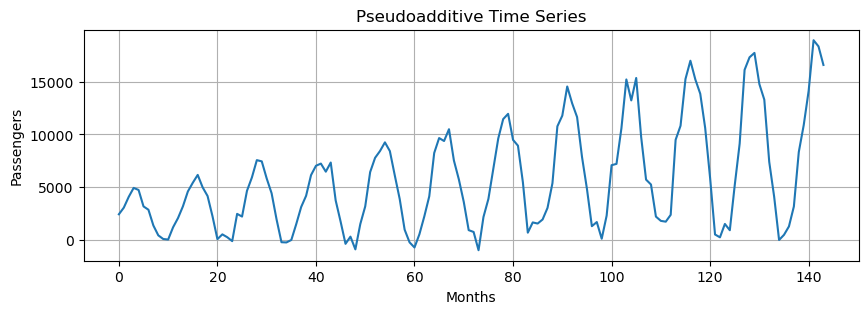
Time Series Decomposition
Now let’s reverse directions.
We have additive and multiplicative data.
Let’s decompose them into their three components.
A very simple, yet often useful, approach is to estimate a linear trend.
A detrended time series is obtained by subtracting the linear trend from the data.
The linear trend is computed as a 1st order polynomial.
slope, intercept = np.polyfit(np.arange(len(additive)), additive, 1) # estimate line coefficient
trend = np.arange(len(additive)) * slope + intercept # linear trend
detrended = additive - trend # remove the trendplt.figure(figsize=(10, 3))
plt.plot(additive, label='Original')
plt.plot(trend, label='Trend')
plt.plot(detrended, label='Detrended')
plt.grid()
plt.legend();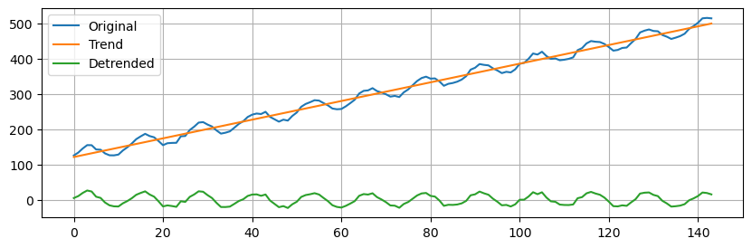
- Next, we will use
seasonal_decompose(more information here) to isolate the main time series components. - This is a simple method that requires us to specify the type of model (additive or multiplicative) and the main period.
Additive Decomposition
- We need to specify an integer that represents the main seasonality of the data.
- By looking at the seasonal component, we see that the period is approximately \(12\) time steps long.
- So, we set
period=12.
additive_decomposition = seasonal_decompose(x=additive, model='additive', period=12)# Utility function to make the plots
def seas_decomp_plots(original, decomposition):
_, axes = plt.subplots(4, 1, sharex=True, sharey=False, figsize=(7, 5))
axes[0].plot(original, label='Original')
axes[0].legend(loc='upper left')
axes[1].plot(decomposition.trend, label='Trend')
axes[1].legend(loc='upper left')
axes[2].plot(decomposition.seasonal, label='Seasonality')
axes[2].legend(loc='upper left')
axes[3].plot(decomposition.resid, label='Residuals')
axes[3].legend(loc='upper left')
plt.show()seas_decomp_plots(additive, additive_decomposition)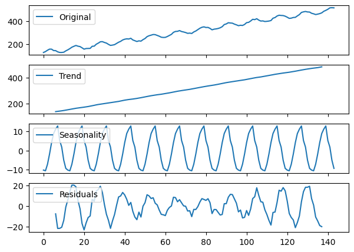
The blue line in each plot representes the decomposition.
There is a legend in the upper left corner of each plot to let you know what each plot represents.
You can see the decomposition is not perfect with regards to seasonality and residuals, but it’s pretty close.
You may notice both trend and residuals are missing data towards the beginning and end.
This has to do with how trend is calculated (beyond the scope of this lesson).
The residuals are missing simply because \(R_{t} = Y_{t} - T_{t} - S_{t}\), so missing trend values mean missing residual values as well.
In other words, there is nothing wrong with these graphs.
Multiplicative Decomposition
- We use the same function as before, but on the
multiplicativetime series. - Since we know this is a multiplicative time series, we declare
model='multiplicative'inseasonal_decompose.
multiplicative_decomposition = seasonal_decompose(x=multiplicative, model='multiplicative',
period=12)
seas_decomp_plots(multiplicative, multiplicative_decomposition)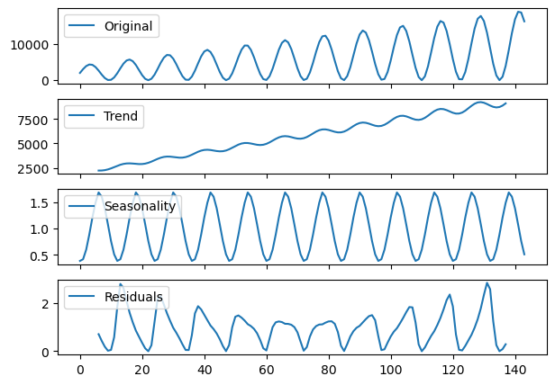
- Again, the decomposition does a relatively good job picking up the overall trend and seasonality.
- We can see the shapes follow the patterns we expect.
Locally estimated scatterplot smoothing (LOESS)
- Next, we try a second method called
STL(Seasonal and Trend decomposition using LOESS). - We start with the additive model.
stl_decomposition = STL(endog=additive, period=12, robust=True).fit()
seas_decomp_plots(additive, stl_decomposition)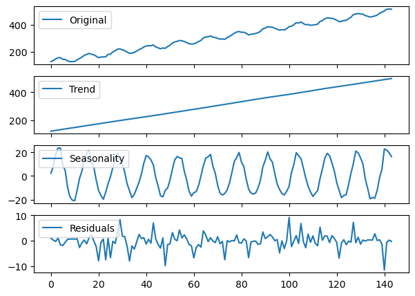
- The STL decomposition does a very good job on the
additivetime series. - Next, we try with the
multiplicativeone.
stl_decomposition = STL(endog=multiplicative, period=12, robust=True).fit()
seas_decomp_plots(multiplicative, stl_decomposition)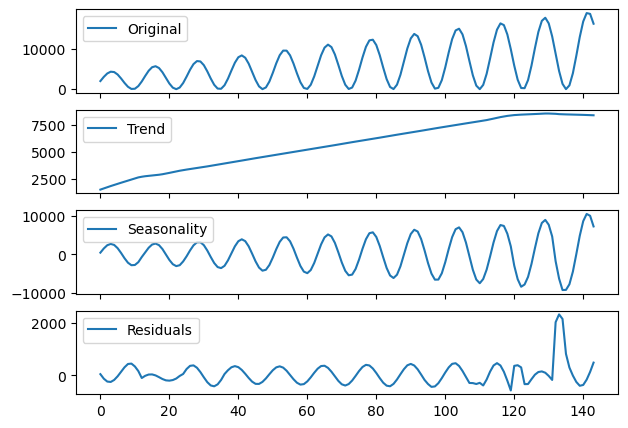
- This decomposition is not as good as the previous one.
Which method to use?
Use seasonal_decompose when:
- Your time series data has a clear and stable seasonal pattern and trend.
- You prefer a simpler model with fewer parameters to adjust.
- The seasonal amplitude is constant over time (suggesting an additive model) or varies proportionally with the trend (suggesting a multiplicative model).
Use STL when:
- Your time series exhibits complex seasonality that may change over time.
- You need to handle outliers effectively without them distorting the trend and seasonal components.
- You are dealing with non-linear trends and seasonality, and you need more control over the decomposition process.
Identify the dominant period/frequency
seasonal_decomposeexpects the dominant period as a parameter.- In this example, we generated the
seasonalcomponent by hand as follows:
seasonal = 20 + np.sin( time * 0.5) * 20We said that the period was approximately \(12\).
But, in general, how do we find it out 🤔?
You can use one of the following techniques:
- Plot the data and try to figure out after how many steps the cycle repeats.
- Do an Autocorrelation Plot (more on this later).
- Use the Fast Fourier Transform on a signal without trend.
We will look more into FFT later on.
For now, you can use the following function to compute the dominant period in the data.
def fft_analysis(signal):
# Linear detrending
slope, intercept = np.polyfit(np.arange(len(signal)), signal, 1)
trend = np.arange(len(signal)) * slope + intercept
detrended = signal - trend
fft_values = fft(detrended)
frequencies = np.fft.fftfreq(len(fft_values))
# Remove negative frequencies and sort
positive_frequencies = frequencies[frequencies > 0]
magnitudes = np.abs(fft_values)[frequencies > 0]
# Identify dominant frequency
dominant_frequency = positive_frequencies[np.argmax(magnitudes)]
print(f"Dominant Frequency: {dominant_frequency:.3f}")
# Convert frequency to period (e.g., days, weeks, months, etc.)
dominant_period = 1 / dominant_frequency
print(f"Dominant Period: {dominant_period:.2f} time units")
return dominant_period, positive_frequencies, magnitudesperiod, freqs, magnitudes = fft_analysis(seasonal)Dominant Frequency: 0.076
Dominant Period: 13.09 time units# Plotting the spectrum
plt.figure(figsize=(10, 3))
plt.stem(freqs, magnitudes)
plt.title('Frequency Spectrum')
plt.xlabel('Frequency')
plt.ylabel('Magnitude')
plt.show()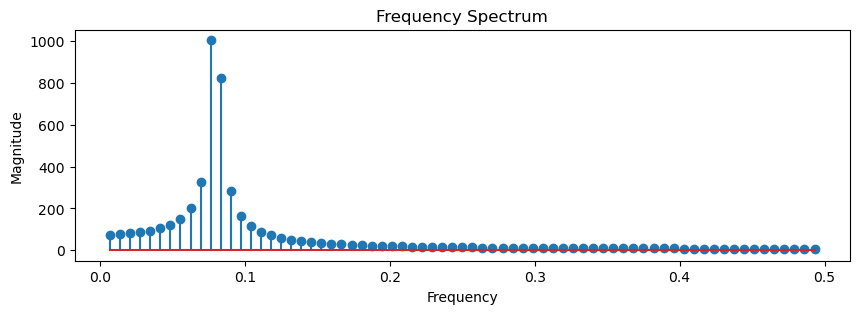
- It turns out that the main seasonality was not exactly \(12\).
- If we want to generate a periodic signal with seasonality \(12\), we have to do as follows.
seasonal_12 = 20 + np.sin(2*np.pi*time/12)*20fft_analysis(seasonal_12);Dominant Frequency: 0.083
Dominant Period: 12.00 time unitsSummary
In this lecture we covered the following topics. - The definition of a time series and examples of time series from the real world. - The definition of time series analysis and examples of its application in different fields. - A practical understanding of the three components of time series data. - The additive, multiplicative, and pseudo-additive models. - Standard approaches to decompose a time series in its constituent parts.
Exercises
Exercise 1
- Consider as the seasonal component the periodic signal with period 12
time = np.arange(144)
seasonal_12 = 20 + np.sin(2*np.pi*time/12)*20- Use
seasonal_12and thetrendandresidualcomponents below to define and plot the additive and the multiplicative models
trend = time * 2.65 + 100
residuals = np.random.normal(loc=0.0, scale=3, size=len(time))- Perform the seasonal decomposition with
seasonal_decomposeandSTLon the new signals and compare the results with the ones obtained in class, where we used an approximate period.
Exercise 2
Load the two different time series as follows.
ts_A = sm.datasets.get_rdataset("AirPassengers", "datasets").data["value"].values
print(len(ts_A))
ts_B = sm.datasets.get_rdataset("CO2", "datasets").data["value"].values
print(len(ts_B))144
468- Plot the two time series.
- Determine if the time series looks additive or multiplicative models.
- Determine the main period of the seasonal component in the two time series.
Exercise 3
- Decompose
ts_Aandts_Busingseasonal_decomposeandSTL. - Comment on the results you obtain. from statsmodels.tsa.seasonal import seasonal_decompose, STL